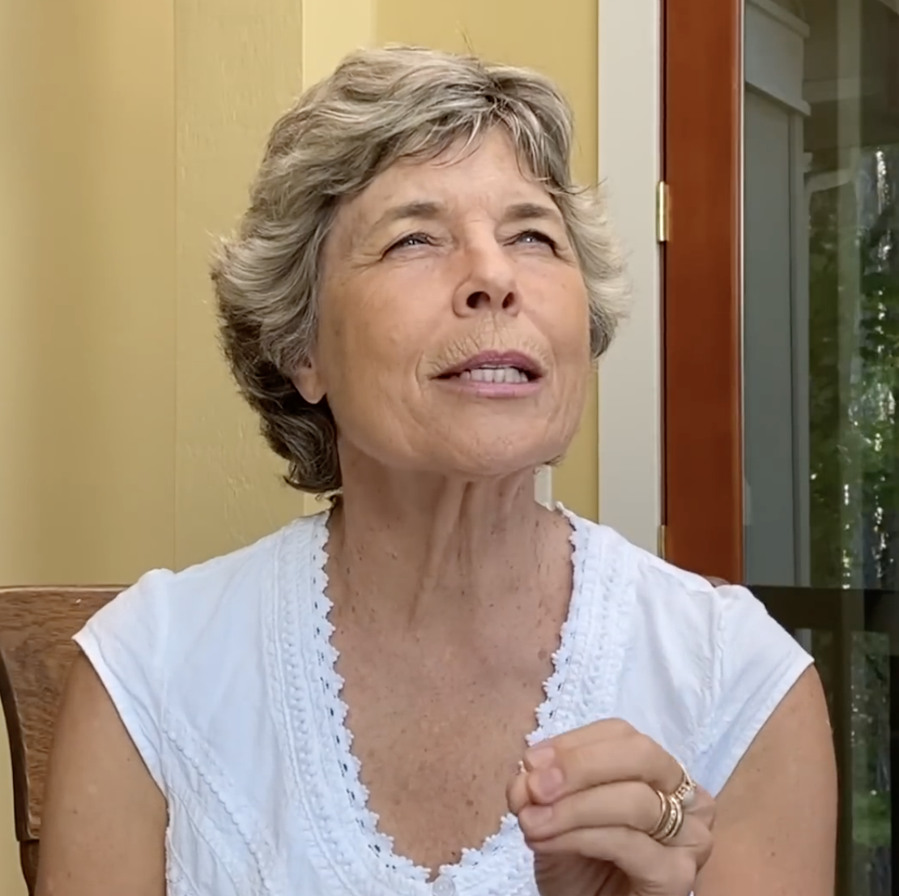
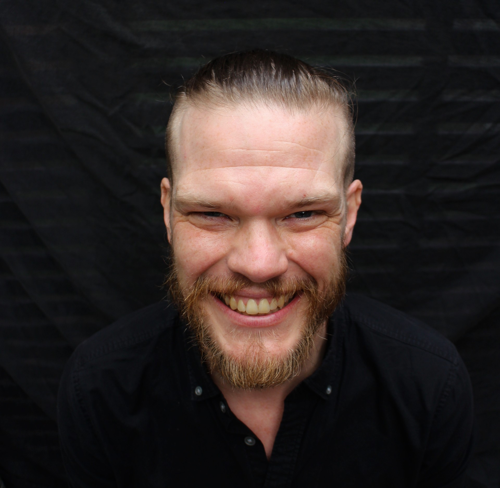

HOW ACCESS WORKS
In a world engineered for distraction, showing up is RADICAL. Above all, we show up — for ourselves, each other, and our planet.
Attend a gathering
Meet the community
Look for the Soul School bus
Participants at events may receive the access code.
Online gatherings are announced through the calendar. You can also email annie@postinternetproject.org with "Soul School" in the subject line and we'll add you to our mailing list. The emails are very short and only include the date and time of upcoming online events. We respect your sovereignty, which means we respect your inbox too.
ADVISORY COUNCIL

Marjorie WoollacottScience Advisor
Marjorie Woollacott, PhD, is a neuroscientist and Professor Emerita at the University of Oregon. Her research explores the relationship between neuroscience, consciousness, and human potential. She is the author of Infinite Awareness and a leading voice in the scientific exploration of consciousness. For decades, she has helped pioneer the integration of consciousness studies into education and science, long before the field began receiving broader recognition.

Niffe HermanssonInitiatory Training Advisor
Niffe Hermansson, PhD, is an applied probabilist, a passionate educator, a dedicated meditator, and a researcher committed to exploring questions related to advanced meditation and models of consciousness with mathematical rigour. Originally from Sweden, Niffe received leadership training in the Swedish navy before embarking on an academic journey pursuing the big questions about reality from a variety of perspectives. He eventually made his home in New Zealand to be able to better balance his work with his deep love for nature, especially the ocean. Niffe has a deep and wide-ranging engagement with esoteric practice, and has experience with a variety of systems, including close to a decade of leading the local branch of an international initiatory society.
Founder & Visionary
Annie Margaret, PhD, is an educator and architect of new models of human development. After nine years of exceeds expectations reviews as a professor at the University of Colorado Boulder's ATLAS Institute, she stepped away from traditional academia to build Soul School — an experiment in what education can become when consciousness is taken seriously. Annie teaches from both research and direct experience, working at the edge of expanded perception, discernment, intuition, and human potential. She is known for creating immersive, experiential learning environments that support the emergence of sovereign, self-trusting, and fully alive human beings.
Soul School
Show
Up.
The best way to participate in Soul School is still the same.